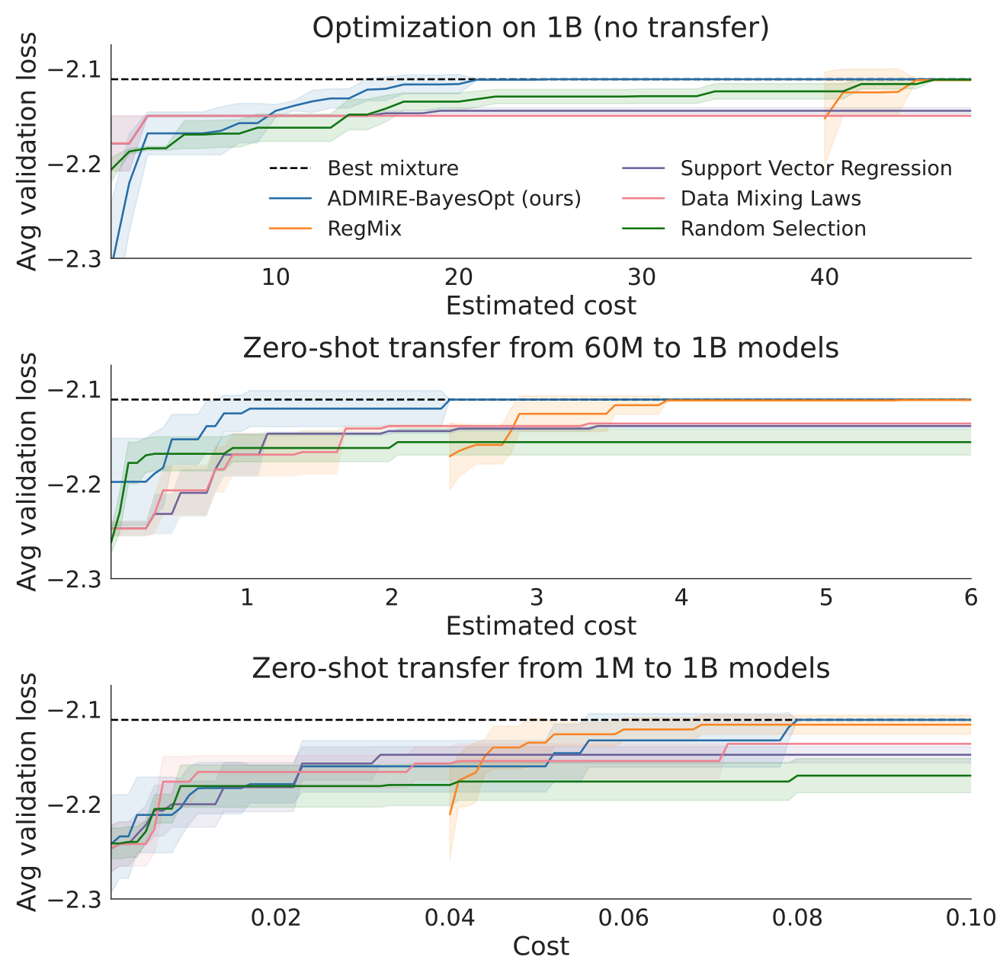
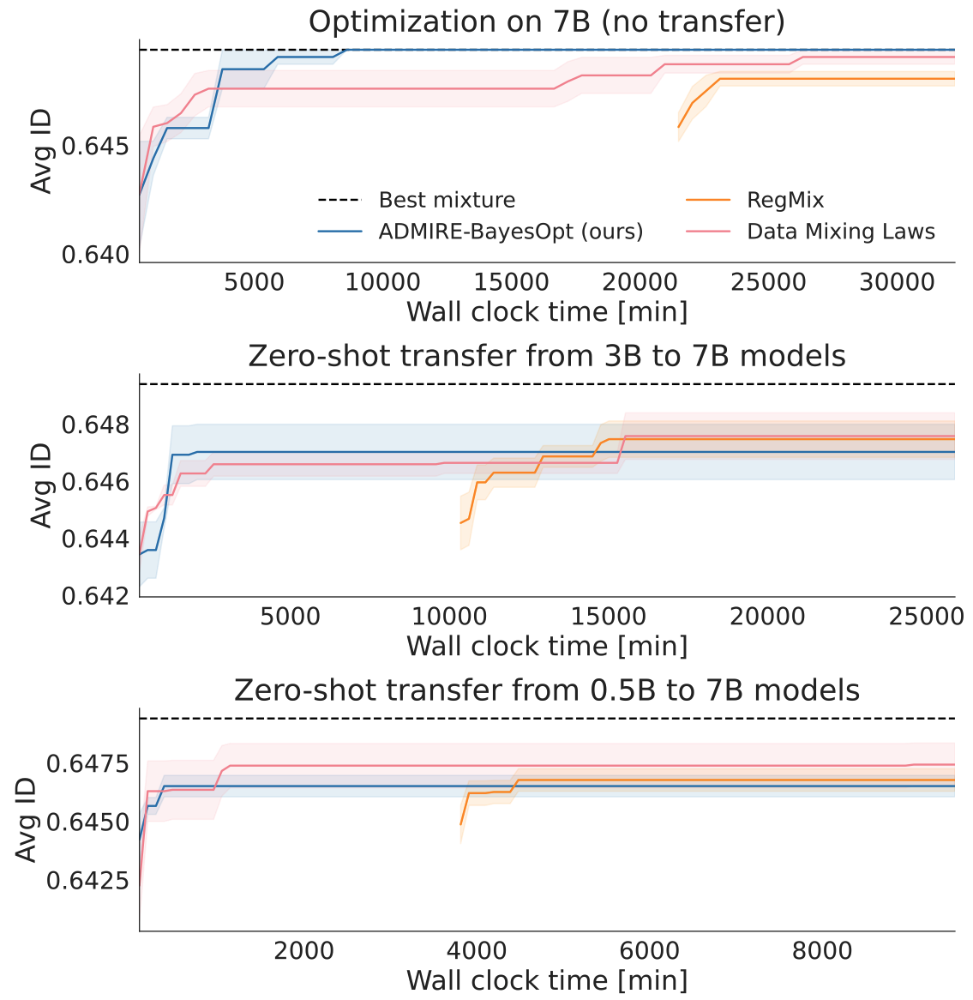
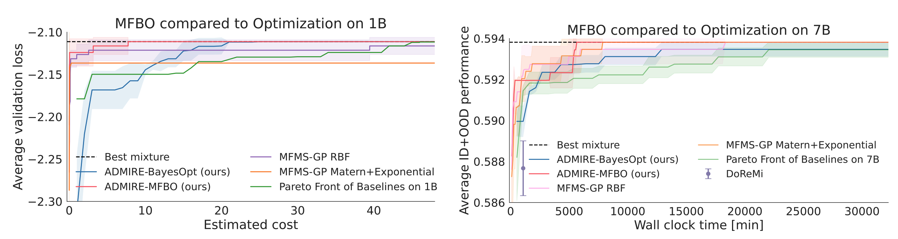
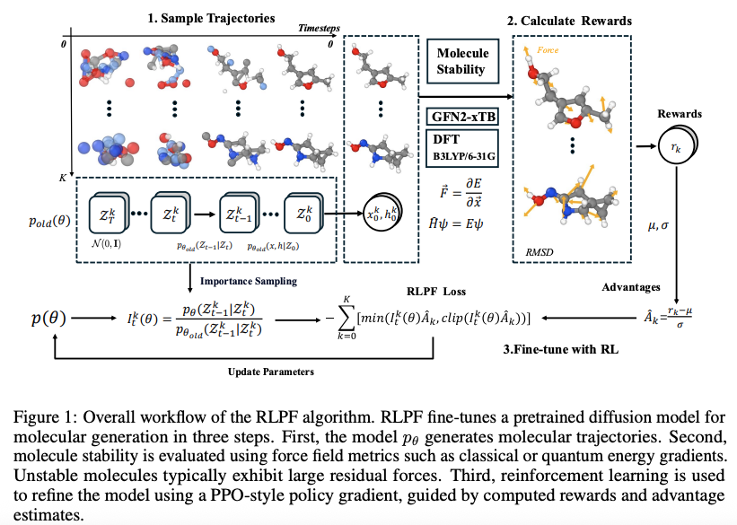
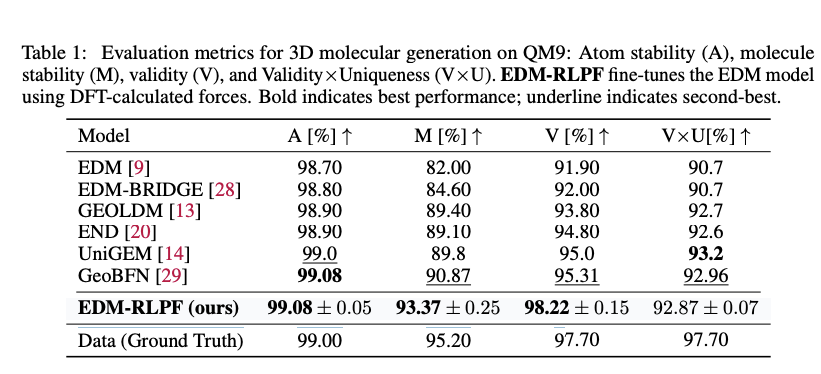
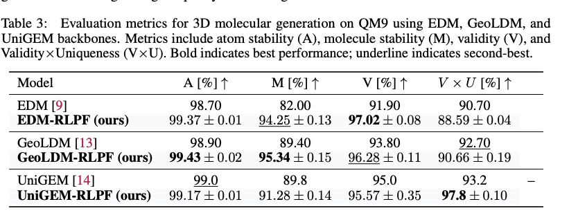
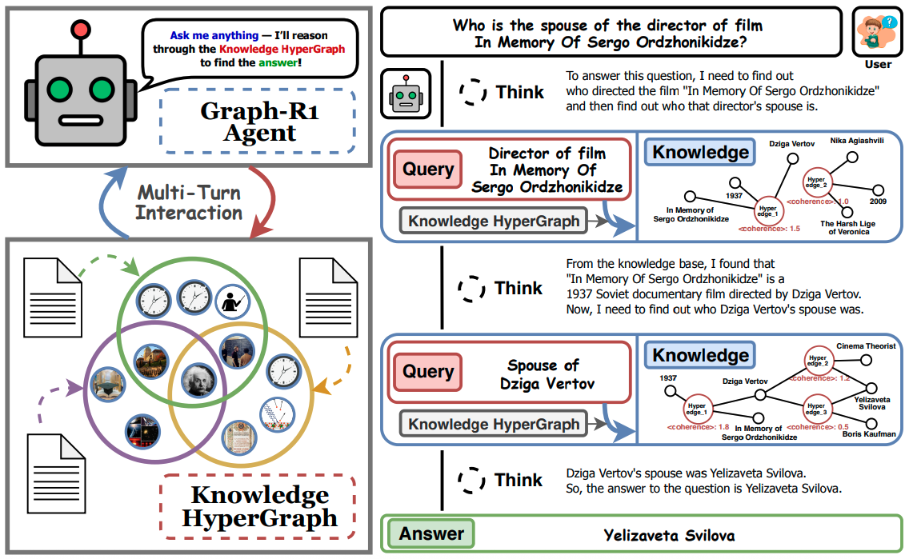
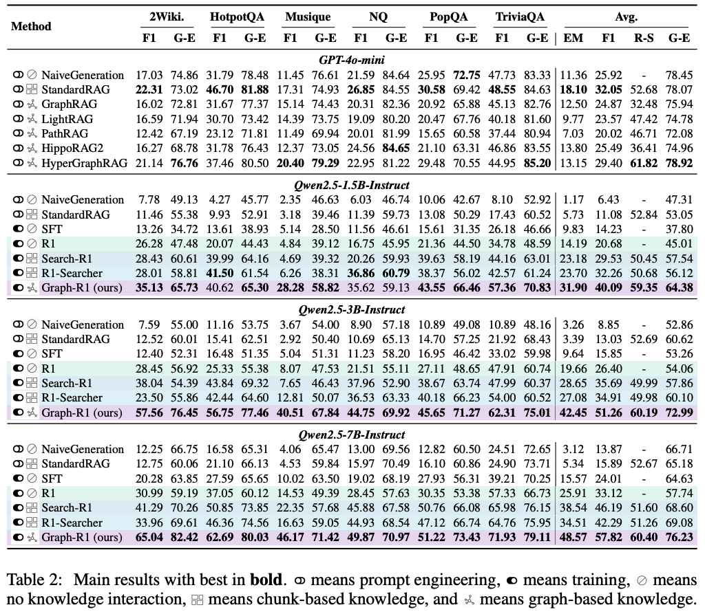

August Papers: Optimal Dataset Mixtures, Stable Molecule Generation, and Agentic Hypergraph RAG
August, even with its heat waves and holidays, left no shortage of exciting research. Our top papers for this month are the following: - ADMIRE-BayesOpt that investigates how to weight different data sources when they are mixed to make a single training dataset where, using multi-Fidelity Bayesian Optimization, the search for the optimal mixture can be automated; - Stable Molecule Generation that uses a force-field based reward function to fine-tune pre-trained 3D molecule generation diffusion models with the goal of sampling physically stable and valid molecules; and - Graph-R1 that takes an agentic RAG approach with a knowledge hypergraph to effectively represent and retrieve information from a corpus of documents.
We hope you enjoy this month's papers as much as we did! If you have thoughts or questions, please reach out to us at @GCResearchTeam.
ADMIRE-BayesOpt: Accelerated Data MIxture RE-weighting for Language Models with Bayesian Optimization
This is a Graphcore co-authored paper.
The key idea
While model design and architectures have received a lot of attention, there has been comparatively less focus on dataset based optimizations. We have a large language model that we wish to finetune for some given benchmark and we have multiple training datasets, e.g. Wikipedia, Github, maths, etc. to finetune our model. Hypothetically, we could train using only one dataset we think is most appropriate, or we could train using a uniform mixture of all training sets. Realistically, we would not expect the ideal mixture to be so simple and as the number of datasets grows, e.g. 10 or more, manually tuning the data mixture becomes less feasible and finding an optimal mixture becomes exponentially harder. As the data mixture significantly affects performance, the risk of lost performance due to a sub optimal mixture becomes much more likely.
In practice, one would use expert prior knowledge, and previous works have used a grid search over a range of mixtures, or training a small language model on a range of mixtures and using the best mixture on the small model to train one large language model.
This work reframes the mixture optimization problem as a sequential iterative search: one may choose a data mixture, choose a model (small, medium, large), train and measure validation score, then choose the next mixture and model, train + validate, and repeat. In contrast with grid search or random search, determining each new experiment can be done with the hindsight of all past experiments, a search algorithm can focus on the most promising regions of mixture space.
Motivated by the extensive hyperparameter and black box optimization literature, this paper proposes to use Multi-Fidelity Bayesian Optimization (MFBO) as the search algorithm. At each iteration the MFBO algorithm chooses the model and data mixture and at the end returns the best mixture for the large model.
Further, the paper provides a dataset of training runs, each run consists of the data mixture, the model size and the validation scores and other metadata. Future work on data mixture optimization can use these runs to compare algorithms without the need for a large GPU compute cluster.

Background
While a Bayesian optimization tutorial is beyond the scope of this post, here is a quick introduction.
Starting from a small set of evaluated mixtures, \(\{(\boldsymbol{\pi}_1,y_1),....,(\boldsymbol{\pi}_n, y_n)\}\), classical BO methods consist of two components: a Gaussian process regression model trained on the evaluated mixtures so far mapping a new mixture \(\boldsymbol{\pi}\) to a prediction and uncertainty \(N(y ;\mu (\boldsymbol{\pi}), \sigma^2(\boldsymbol{\pi}))\) and an acquisition function \(\alpha(\boldsymbol{\pi})\in\mathbb{R}\) that at any given \(\boldsymbol{\pi}\) uses the model to quantify the expected benefit of hypothetically training the model and measuring the validation objective \(y\). The acquisition function captures the exploration-exploitation trade-off and this work uses Expected Improvement and Max Value Entropy Search. The mixture with the highest acquisition value,
is used to train a model and measure validation performance \(y_{n+1}\). The new point is added to the dataset for the GP model, the model is updated the algorithm repeats.
Multi-Fidelity Bayesian Optimization augments the search space with a fidelity level, in this case a model size parameter, at each iteration the algorithm must determine a mixture and a model \((\boldsymbol{\pi}, m)\). The Gaussian process regression model must be designed to predict over the joint \((\boldsymbol{\pi}, m)\) space as well as the acquisition function \(\alpha(\boldsymbol{\pi}, m)\). Each model size has a corresponding cost of evaluation, \(c_m\) where the small model is cheaper than the large model and the acquisition function uses the cost the quantify the acquisition value per unit cost of training a given model with a given mixture, for a given mixture, a large model may cost twice the compute the train than a small model, yet it may provide 3 time the hypothetical benefit, then the large model will have higher acquisition function value and will be chosen for the next experiment.
Experiments
There are two benchmark datasets of pre-trained runs that can be used for comparing data mixture optimization algorithms - Pile is a dataset of English text for LLM training, this was used by the authors of the RegMix data mixture optimization algorithm who provide a set of dataset of training results for 1M, 60M and 1B parameter language models with different mixtures. - Tülu is a collection post-training datasets, in this work the authors use this to train Qwen2.5-500M, Qwen2.5-3B, Qwen2.5-7B models with a variety of randomly generated mixtures and measured validation metrics.
Zero-Shot Transfer
The first set of experiments restricts the optimization algorithms to only use one model to evaluate a data mixture, e.g. use a small model to find the optimal data mixture, then for performance measurement, use the best mixture to train one large model and measure large model validation performance, transfer the optimal mixture from small to large in a "zero shot" fashion, without any large model training data. ADMIRE-BayesOpt out-performs non-sequential methods. Though when optimizing the mixture for a small model, the algorithms do not converge to the best large model mixture, there is a ceiling on how well zero-shot transfer can work.


Multi-Fidelity Optimization
The ceiling on zero-shot transfer can be removed by simply optimizing the mixture for just the large model. However this is the most computationally expensive and small models can act as cheap approximate proxy for the large model. In the second set of experiments, the optimization algorithm is free to choose a mixture and also choose from 1M, 60M, 1B models for Pile and 500M, 3B, 7B models for Tülu with varying cost, all with the goal of finding the best mixture for the large model. The Gaussian Process regression is used to predict the best mixture for the large model and the corresponding validation performance is reported. The optimization algorithm can now converge to the best large model mixture (red) with much less compute than using only the large model (blue).

Takeaways
- LLM performance is sensitive to training data mixture and should be a key consideration in model training
- Each model size has a different optimal data training mixture
- Using Multi-Fidelity Bayesian Optimization yields higher performing data mixtures within a given wall clock time than restricting to one model size.
Guiding Diffusion Models with Reinforcement Learning for Stable Molecule Generation
The key idea
The authors developed Reinforcement Learning with Physical Feedback (RLPF), a model for generating physically realistic 3D molecular structures. While diffusion models with equivariant neural networks capture molecular geometry, they often fail to ensure physical stability. RLPF addresses this issue by fine-tuning a pretrained model with proximal policy optimization. The key contribution is the use of force field based reward functions, which provides physical feedback to guide molecule generation towards energetically stable and valid conformations. Experiments on QM9 and GEOM-drug show that RLPF significantly improves stability, and generalizes across model backbones.
Their method
RLPF uses reward signals derived from force field-based metrics to fine-tune pretrained diffusion models to guide the generation of physically realistic and energetically stable molecules. Figure 1 shows the overall workflow of RLPF and it contains three main components:
-
Trajectories sampling
Using the pre-trained model $p_{\theta_{\text{old}}} $ generate \(K\) molecular trajectories by denoising latent variables over $ T $ timesteps. This process captures both the intermediate states $ z_t $ and the final molecular structure $z_0 = (x, h) $. -
Rewards calculation
The generated molecules \(z_0 = (x, h)\) are evaluated using reward functions, extended tight binding (xTB) based force deviation and valency-based stability. These evaluations yield scalar rewards $ r(x, h) $. -
Fine-tune with RL
For each trajectory $ k $, the reward $ r(x^k, h^k) $ is normalized to obtain an advantage estimate $ \hat{A}^k_t $. The importance sampling ratio $ I^k_t(\theta) $ is computed using log-likelihood scores. Finally, a PPO-style clipped policy objective is optimized to update the model parameters $ \theta $.

The molecule generation is formulated as MDP defined by the following components:
- State: \(s_t = (z_t, t, c)\), where \(c\) is the conditioning variable (if available), \(t\) the timestep, and \(z_t = [x_t, h_t]\) the latent at step \(t\). The \(x_t\) and \(h_t\) are atom \(3D\) coordinate and atom type encoding, respectively.
- Action: $ a_t = z_{t-1}$, corresponding to the output of the reverse diffusion step.
- Policy: \(\pi(a_t \mid s_t) = p_\theta(z_{t-1} \mid z_t, t, c)\), which is the diffusion backbone neural network parameterized by parameters \(\theta\).
- Reward: $ R(s_t, a_t) = r(z_0, c) \;\; \text{if } t=0,\; \text{and } 0 \;\text{otherwise}$.
Generating a molecule consists a trajectory from step \(t=T\) to \(t=0\), where the \(z_0\) from the final diffusion step is the final denoised sample. Suppose a trajectory \(\tau\) denote a state-action sequence \(s_0, a_0, s_1, a_1, \ldots, s_T, a_T\).
The total reward of the trajectory is given by $R(\tau) = \sum_{t=0}^{T} r(s_t, a_t) = r(s_0) $, since reward is only available at the last step only.
The goal is to learn a policy, \(p_\theta\), that maximizes the expected reward over the trajectories with performance objective (\(J(\theta)\)).
The goal is to find \(\theta\) that maximizes \(J(\theta)\):
This aims to find a policy that assigns larger probabilities to trajectories that have high reward and lower probabilities to trajectories with lower reward. This is achieved using gradient based optimization
For stability reason, the authors applied PPO-style surrogate objective defined below:
where \(p_{\theta old}\) denotes the diffusion model before the current update.
For each time step t and trajectory k, the importance sampling ratio (\(I_t^k(\theta)\)) is defined as :
The advantage estimate \(\hat{A}_t^k\) is computed via standardization of the scalar reward:
where \(\mu\) and \(\sigma\) are the running mean and standard deviation of recent rewards across trajectories.
The reward used to guide generation is the deviation of generated molecules from their equilibrium structure measured by root mean square deviation (RMSD) of atomic forces. These were computed using two methods: quantum mechanical calculations at the B3LYP/6-31G(2df,p) level of theory or the semi-empirical GFN2-xTB force field.
Results
RLPF was evaluated on QM9 and GEOM-drug datasets. RLPF fine-tuned models were compared with a range of state-of-the-art generative baselines, including EDM, EDM-BRIDGE, GEOLDM, EDN, GeoBFN, and UniGEM. Molecular quality metrics, such as atom stability, molecule stability, chemical validity, uniqueness, and novelty were used to compare the performance of the molecules
As shown in Table 1, EDM fine-tuned with RLPF (EDM-RLPF) consistently improved the results of molecular metrics compared with the baseline EDM model on the QM9 dataset. While baseline EDM performance was inferior compared with the their baseline model, EDM-RLPF outperformed other baseline models in three out of four metrics used by the authors. The baseline models were trained with configuration provided in the original papers. Moreover, on GEOM-drug dataset, EDM-RLPF improved atom stability from \(81.3\%\) to \(87.53\%\) and increased validity from \(91.9\%\) to \(99.20\%\) compared with EDM model.
During fine-tuning, the same pre-training data was used. The number of denoising time steps \(T\) is set to \(1000\), with \(K = 512\) sampled trajectories per epoch and the model was fine-tuned using force deviation reward computed via DFT at the B3LYP/6-31G(2df,p) level.

Furthermore, to evaluate genralizability of RLPF, the authors applied RLPF to other generative model backbones beyond EDM. As shown in the Table 2, RLPF consistently improves atom stability, molecule stability, and validity across all backbones.

Overall, RLPF could be flexibly integrated into different architectures and improves physical plausibility of generated molecules using physics inspired feedback during training.
Graph-R1: Towards Agentic GraphRAG Framework via End-to-end Reinforcement Learning
The key idea
The authors present an agentic approach for RAG where, in each step, an LLM-based agent is given the choice to either (1) retrieve more information for its context or (2) terminate and answer the query. Their LLM-based agent is fine-tuned from a pretrained LLM using an end-to-end reinforcement learning (RL) objective based on Group Relative Policy Optimization (GPRO) that rewards the agent for the format of the response and the quality of the response upon termination. Compared to previous work for agentic RAG (e.g., R1-Searcher and Search-R1), the key difference in their approach is in the retrieval step. They perform retrieval from a knowledge hypergraph that is constructed based on the underlying corpus of documents.
Their method

Hypergraph Construction. They first use the corpus of documents \(K\) to construct a knowledge hypergraph \(G = (V, E)\) where, for each document \(d \in K\), they do the following: 1. Extract relational facts \(\\{(e_i, V_{e_i})\\} \sim \pi_\text{ext}(d)\) using an LLM-based extractor \(\pi_\text{ext}(d)\). 2. For each fact \((e_i, V_{e_i})\) extracted, add the hyperedge \(e_i\) to \(E\) and each of its corresponding entities \(v \in V_{e_i}\) to \(V\).
Hyperedge Retrieval. Then, given any query \(q\) and an embedding model \(\phi\), retrieving from the corpus of documents can be performed directly by retrieving hyperedges from the hypergraph \(G\) as follows: 1. Embed the query \(q\) using \(\phi\) to get the embedding vector \(\phi(q)\). Then, obtain the top-\(k_E\) hyperedges \(F_E \subseteq E\) whose embedding vectors using \(\phi\) are most similar to \(\phi(q)\). This makes up the final set of hyperedges retrieved in this step.
Multi-Step Reasoning Format. Given a query from the user, the LLM-based agent performs multi-step reasoning where, in each step, it starts with a thinking phase (within <thinking></thinking> tags) based on the previous context (initialised with the original query) that produces an action to either retrieve or terminate. Retrieving consists of generating an appropriate query (within <query></query> tags) that is used to retrieve further knowledge from the hypergraph (outlined above), which is then added to the LLMs context (within <knowledge></knowledge> tags). Terminating consists of generating the final answer (within <answer></answer> tags).
Rewards for GRPO-based RL. During the RL fine-tuning process, for each training question, the agent uses the current policy to generate \(N\) possible multi-step reasoning trajectories. The policy is then updated using the GRPO framework where each step of the trajectory is rewarded for adhering to the above response format and the final step (i.e., upon termination) is rewarded for returning the correct answer. In particular, given a \(T\)-step reasoning trajectory, each appropriately formatted step is given a score of \(0.5\) with an overall maximum of \(1.0\); and, conditioned on a maximum format score of \(1.0\) with an outputted answer \(\textbf{ans}_o\), the answer reward is computed as the token-level F1 score w.r.t. the golden answer \(\textbf{ans}_g\). Finally, the score is the sum of both of these rewards subtract \(1\).
where \(\textbf{I}(.)\) is the indicator function.
Experiments
The authors compare the performance of Graph-R1 on several question-answer datasets using various Qwen2.5 models as the initial pretrained LLM for RL fine-tuning. See Table 2 below (taken from their paper) for the results of their experiments.
In all experiments, they use bge-large-en-v1.5 as the embedding model (i.e., \(\phi\) mentioned above), and in all runs of Graph-R1 they use gpt-4o-mini for the LLM-based knowledge extractor (i.e., \(\pi_\text{ext}\) mentioned above).

Conclusion
The authors show that representing the corpus of documents as a knowledge hypergraph increases the representability of the information in the corpus. Furthermore, through their agentic RAG approach, they show that the knowledge hypergraph allows for effective information retrieval in the form of hyperedges. On the other hand, the computational complexity of retrieval from the hypergraph grows linearly w.r.t. the number of hyperedges in the knowledge hypergraph, which is much larger than the number of documents in the corpus and could be inefficient for large corpora.